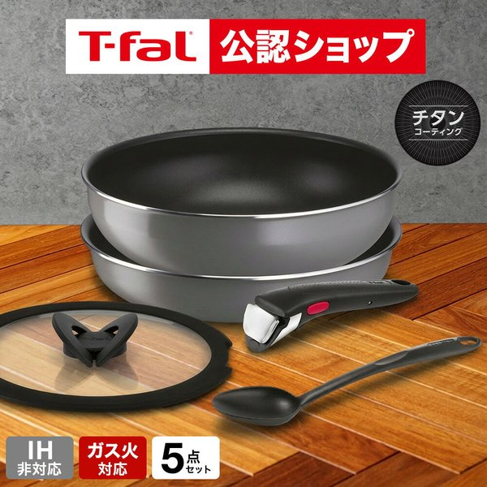
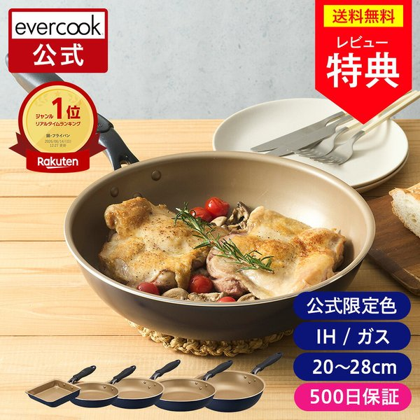
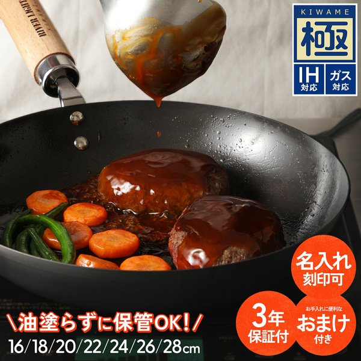
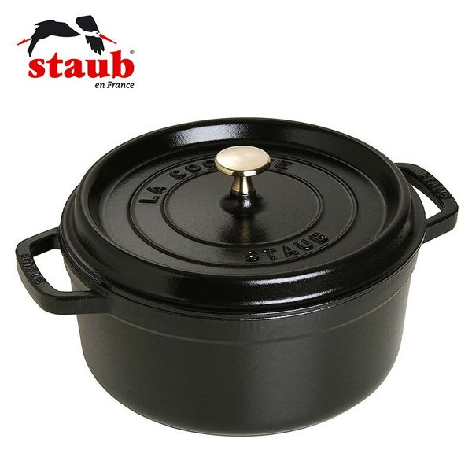
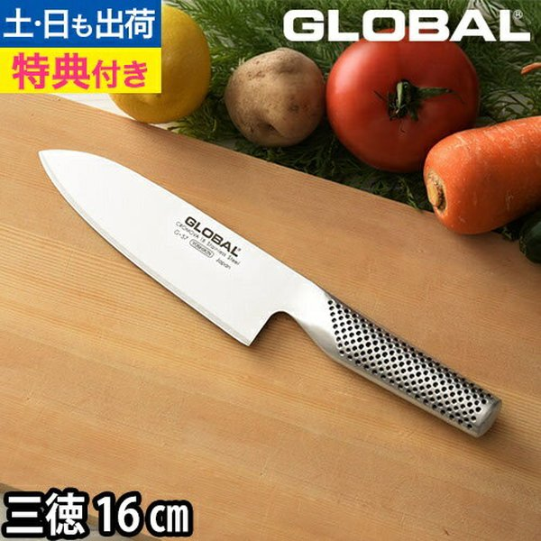
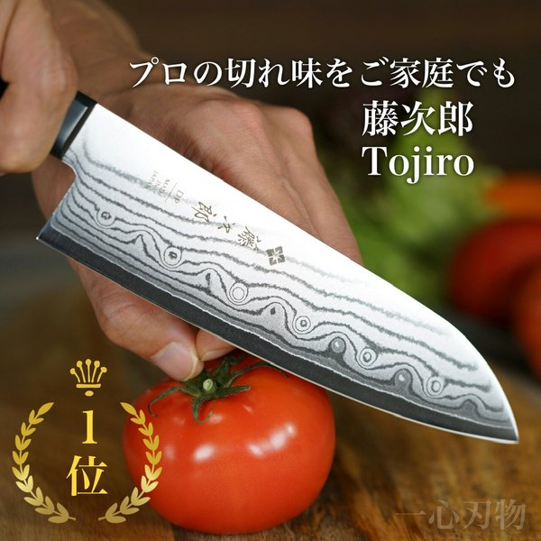
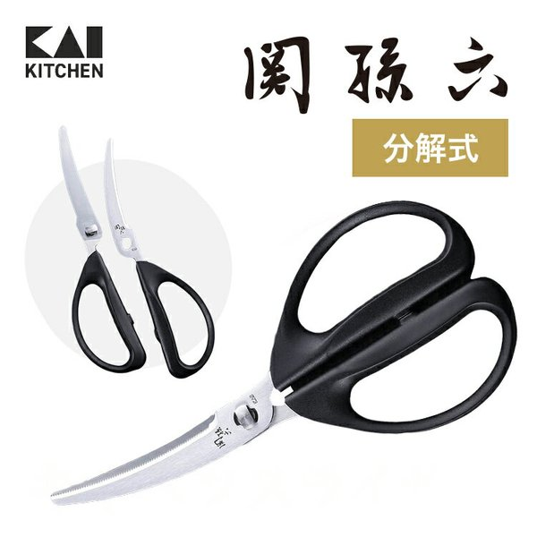
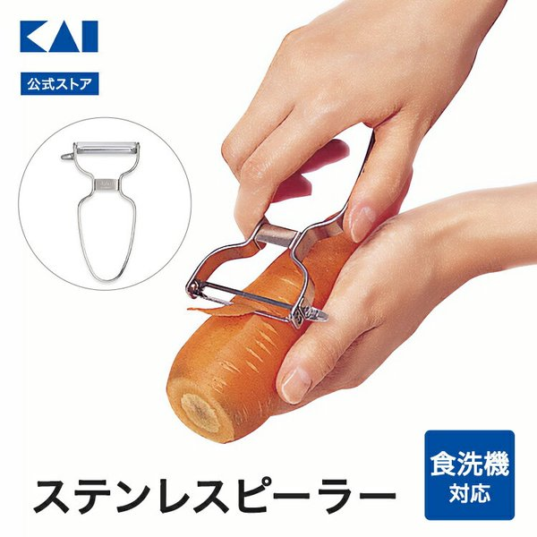
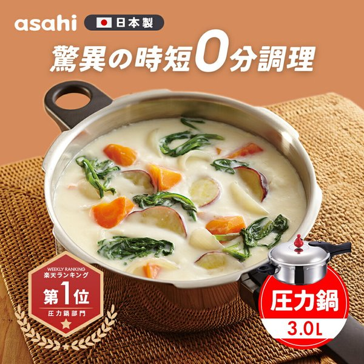
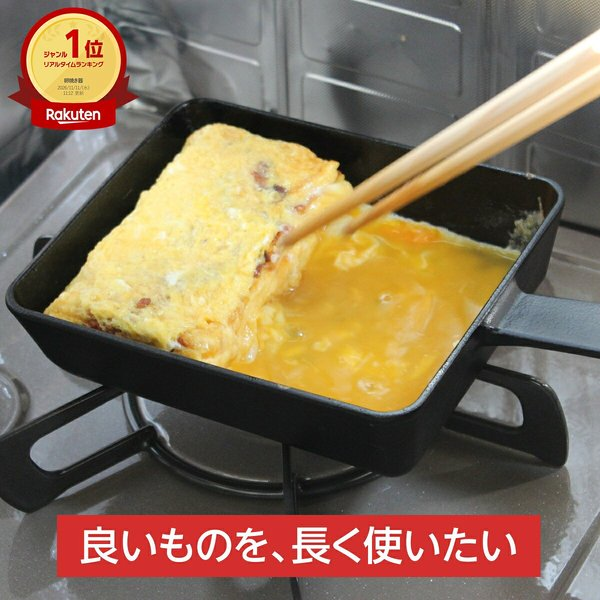

【2026年最新】一生モノ＆毎日ラクになる！フライパン・包丁・鍋・調理器具おすすめ10選
料理が面倒に感じる日の原因は、たいてい道具です。切れない包丁、くっつくフライパン、重い鍋。1つ替えるだけで、同じ献立でも手を動かす時間が短くなります。
選ぶ軸は3つ。毎日使うものか、手入れをどこまで許容するか、そしてコンロはガスかIHかです。毎日使うフライパンは、軽さと焦げ付きにくさを優先。包丁は、研ぐ手間を惜しまないなら鋼、手入れを簡単にしたいならステンレス一体型を選びます。鍋は、煮込みをよくするなら保温性の高い鋳物、時短を優先するなら圧力鍋です。ガス火専用の商品も多いので、IHクッキングヒーターの家は対応表記を必ず確認してください。道具は10年単位で使うものなので、最初に1本だけ良いものを買うのが、結局いちばん安く済みます。
本記事では、楽天市場で人気・高評価のフライパン・包丁・鍋・調理器具10選を、実売価格とレビュー評価つきで写真付き紹介します。
- おすすめ10選 スペック・特徴比較表
- BEST 1｜ティファール インジニオ・ネオ ベーシック セット5（L16190）
- BEST 2｜エバークック フライパン スタンダードシリーズ（500日保証）
- BEST 3｜リバーライト 極JAPAN 鉄フライパン（窒化鉄・IH対応）
- BEST 4｜ストウブ ピコ・ココット ラウンド 20cm（国内正規品）
- BEST 5｜GLOBAL 三徳包丁 G-57 刃渡り16cm
- BEST 6｜藤次郎 ダマスカス 三徳包丁（V金10号・燕三条製）
- BEST 7｜貝印 関孫六 カーブキッチンバサミ（分解式・食洗機対応）
- BEST 8｜貝印 ステンレスピーラー（T型・千切り対応）
- BEST 9｜アサヒ軽金属 ゼロ活力なべ M 3.0L（圧力鍋・IH対応）
- BEST 10｜南部鉄器 卵焼き器 13cm（IH対応・岩手県）
- 【読者負担0円】買わなくても得する無料サービス
- まとめ：フライパン・包丁・鍋・調理器具10選の選び方
| 順位 | 商品名 | ブランド | 最大の特徴・おすすめ理由 | 総合評価 |
|---|---|---|---|---|
| BEST 1 | ティファール インジニオ・ネオ ベーシック セット5（L16190） | ティファール（T-fal） | 取っ手を外して食卓にそのまま出せる | 4.72 |
| BEST 2 | エバークック フライパン スタンダードシリーズ（500日保証） | ドウシシャ（evercook） | IH・ガス火の両方に対応 | 4.69 |
| BEST 3 | リバーライト 極JAPAN 鉄フライパン（窒化鉄・IH対応） | リバーライト | 窒化鉄でサビにくく、油ならし不要 | 4.49 |
| BEST 4 | ストウブ ピコ・ココット ラウンド 20cm（国内正規品） | ストウブ（STAUB） | 鋳物ホーローで保温性が高い | 4.57 |
| BEST 5 | GLOBAL 三徳包丁 G-57 刃渡り16cm | グローバル（GLOBAL） | オールステンレス一体構造で継ぎ目がない | 4.76 |
| BEST 6 | 藤次郎 ダマスカス 三徳包丁（V金10号・燕三条製） | 藤次郎（TOJIRO） | V金10号の芯材で切れ味が長持ちする | 4.58 |
| BEST 7 | 貝印 関孫六 カーブキッチンバサミ（分解式・食洗機対応） | 貝印（KAI） | カーブ刃で骨や海苔を切りやすい | 4.51 |
| BEST 8 | 貝印 ステンレスピーラー（T型・千切り対応） | 貝印（KAI） | 皮むきと千切りが1本で済む | 4.85 |
| BEST 9 | アサヒ軽金属 ゼロ活力なべ M 3.0L（圧力鍋・IH対応） | アサヒ軽金属 | 高い圧力で煮込みが短時間で終わる | 4.74 |
| BEST 10 | 南部鉄器 卵焼き器 13cm（IH対応・岩手県） | 南部鉄器（及春鋳造所） | 南部鉄器で熱の回りがよく、ふっくら焼ける | 4.76 |
ティファール インジニオ・ネオ ベーシック セット5（L16190）

取っ手が1本あれば、フライパンもウォックパンも鍋も同じ取っ手で使えるセット。料理をしたら取っ手を外してそのまま食卓に出せるので、皿を1枚減らせます。片付けのときに取っ手がじゃまにならず、収納の幅も詰められます。5点セットで9,990円、レビュー1,355件・評価4.72。ガス火専用なので、IHクッキングヒーターの家はIH対応モデルを選んでください。楽天市場での実売価格は約9,990円（2026年11月時点）。
- 取っ手を外して食卓にそのまま出せる
- レビュー1,355件・評価4.72の定番
- 9,990円で5点揃う
- ガス火専用で、IHクッキングヒーターでは使えない
エバークック フライパン スタンダードシリーズ（500日保証）

軽さを売りにしたフライパンで、IHとガス火の両方に対応します。持ち手が軽いので片手で振って炒めやすく、洗うときも腕に負担がかかりません。500日保証とPFOAフリーのコーティングで、買い替えの目安がはっきりしているのも選びやすいところです。レビュー2,251件・評価4.69と口コミが多く、4,180円と手頃。まず1本だけ新しくするなら、この価格から始められます。楽天市場での実売価格は約4,180円（2026年11月時点）。
- IH・ガス火の両方に対応
- 軽くて片手で扱いやすい
- 500日保証・レビュー2,251件
- ふっ素加工なので、空焚きや金属ヘラの使用は避ける
リバーライト 極JAPAN 鉄フライパン（窒化鉄・IH対応）

窒化処理をした鉄のフライパンで、油ならしをしなくても使い始められ、サビにも強いのが特徴です。コーティングがないので、使うほど油が馴染んで焦げ付きにくくなります。IHとガス火の両方に対応し、3年保証と名入れが付くのも公式ショップならでは。レビュー3,541件・評価4.49、5,500円。鉄分が取れる点も、毎日使う道具としてはうれしいところです。楽天市場での実売価格は約5,500円（2026年11月時点）。
- 窒化鉄でサビにくく、油ならし不要
- IH・ガス火対応で3年保証付き
- レビュー3,541件・5,500円
- コーティングはないので、洗ったあとは水分を拭き取って乾かす
ストウブ ピコ・ココット ラウンド 20cm（国内正規品）

鋳物ホーローの両手鍋で、20cmは2〜3人分の煮込みに向くサイズ。厚い鋳物が熱を均一に伝えるので、煮込みが安定します。そのまま食卓に出せる見た目で、煮物を鍋ごと置けるのが日々の負担を減らします。重さはありますが、そのぶん保温性が高く、火を止めてもしばらく熱が残ります。国内正規品でレビュー81件・評価4.57、22,980円です。楽天市場での実売価格は約22,980円（2026年11月時点）。
- 鋳物ホーローで保温性が高い
- 鍋ごと食卓に出せる
- 国内正規品・評価4.57（レビュー81件）
- 鋳物なので重く、洗ったあとは水分を拭いて乾かす
GLOBAL 三徳包丁 G-57 刃渡り16cm

刃渡り16cmの三徳包丁で、肉・魚・野菜を1本でさばけます。GLOBALはオールステンレスの一体構造で、柄との継ぎ目がないため汚れが入りにくいのが特徴です。切れ味が長持ちし、手入れも簡単。レビュー3,897件・評価4.76と、包丁では飛び抜けて口コミが多い定番です。12,100円で、最初の1本を長く使いたい人に向いています。楽天市場での実売価格は約12,100円（2026年11月時点）。
- オールステンレス一体構造で継ぎ目がない
- レビュー3,897件・評価4.76
- 三徳1本で肉・魚・野菜に対応
- 食洗機には向かず、使用後は手洗いして乾かす
藤次郎 ダマスカス 三徳包丁（V金10号・燕三条製）

燕三条の藤次郎が作る三徳包丁。V金10号の鋼を芯にしたダマスカス鋼で、切れ味と錆びにくさを両立しています。家庭用でもプロ向けと同じ材料を使っており、野菜の切り口が変わります。レビュー213件・評価4.58、13,200円。包丁を1本だけ良いものに替えたいとき、最初に候補に挙げたい価格帯です。楽天市場での実売価格は約13,200円（2026年11月時点）。
- V金10号の芯材で切れ味が長持ちする
- 燕三条製の日本製
- 評価4.58（レビュー213件）
- 研ぐ手間は必要で、食洗機は使えない
貝印 関孫六 カーブキッチンバサミ（分解式・食洗機対応）

刃がカーブしたキッチンバザミで、鶏肉の骨や魚のエラの周り、海苔を切るのに向いています。分解できるので、刃の間まで洗えて衛生的です。食洗機にも対応し、1,870円と手頃。レビュー393件・評価4.51。包丁では切りにくい場所を任せられる1本で、あると下ごしらえの手間が変わります。楽天市場での実売価格は約1,870円（2026年11月時点）。
- カーブ刃で骨や海苔を切りやすい
- 分解して洗え、食洗機にも対応
- 1,870円・レビュー393件
- 大きな塊肉を切る用途には向かない
貝印 ステンレスピーラー（T型・千切り対応）

T型のステンレスピーラーで、刃が一直線なので皮を薄く長くむけます。千切り用の刃も付き、キャベツやにんじんの千切りが同じ道具で済みます。食洗機に対応し、1,000円。レビュー190件・評価4.85と、価格のわりに満足度が高い製品です。プラスチック製のピーラーがすぐ刃こぼれする、という人に向いています。楽天市場での実売価格は約1,000円（2026年11月時点）。
- 皮むきと千切りが1本で済む
- ステンレス製で食洗機対応
- 評価4.85・1,000円
- T型なので、皮をむく向きに慣れるまで少し時間がかかる
アサヒ軽金属 ゼロ活力なべ M 3.0L（圧力鍋・IH対応）

IHとガス火に対応した圧力鍋で、3.0Lは2〜4人分の煮込みに向く浅型。高い圧力で短時間に火を通すので、カレーや煮物、玄米がいつもの半分ほどの時間で仕上がります。5.5合炊きの炊飯にも使え、レシピ集が付属します。レビュー438件・評価4.74、36,190円。コンロの前に立つ時間を減らしたい家ほど効果が出ます。楽天市場での実売価格は約36,190円（2026年11月時点）。
- 高い圧力で煮込みが短時間で終わる
- 炊飯にも使え、レシピ集付き
- レビュー438件・評価4.74
- 本体が大きく重いので、収納場所を確保しておく
南部鉄器 卵焼き器 13cm（IH対応・岩手県）

岩手県の南部鉄器で作られた卵焼き器。鉄なので熱が回りやすく、卵がふっくら焼けます。IHとガス火の両方に対応し、使い込むほど油が馴染みます。13cmの角型で、お弁当の卵焼きがちょうど1本分。レビュー149件・評価4.76、5,830円。テフロンの卵焼き器がすぐ焦げ付く、という人に替えてほしい1台です。楽天市場での実売価格は約5,830円（2026年11月時点）。
- 南部鉄器で熱の回りがよく、ふっくら焼ける
- IH・ガス火の両方に対応
- 評価4.76（レビュー149件）
- 鉄なので、使い終えたら油を薄く塗って保管する
この記事の商品を買う前に、まずは無料で得する選択肢をチェック。どれも登録・利用は0円で、無料期間中に解約すれば料金はかかりません。読みたい雑誌がある人、ポイントを貯めたい人、アンケートなら気軽という人、それぞれに合うものを選べます。
初回31日無料・無料期間中に解約すれば0円 → 楽天ポイントモール｜登録無料で毎日ポイ活
買い物なしでもポイントが貯まる無料サービス → 楽天インサイト｜アンケートに答えてポイント
登録無料・すきま時間のアンケートで貯まる → 楽天カード｜年会費永年無料
新規発行・年会費ずっと0円 →
4つのサービスの違いと使い分けは「出費0円で得する！買わずにポイントが貯まる無料サービス厳選4選」でまとめています。
💡 まとめ：フライパン・包丁・鍋・調理器具10選の選び方
調理器具は、毎日使うものから替えるのが正解です。フライパンは軽さと焦げ付きにくさ、包丁は切れ味と手入れのしやすさ、鍋は保温性と重さのバランスで選びます。ティファールの取っ手のとれるセットは、取っ手を外して食卓に出せるぶん、洗い物と皿の数が減ります。鉄のフライパンと包丁は手入れが要りますが、そのぶん長く使えます。圧力鍋は煮込みの時間を半分ほどに縮められるので、帰りが遅い日の味方になります。買う前に、コンロの種類（ガス・IH）と収納の奥行きを測っておくと、届いてから置き場所に困りません。
楽天市場では「5と0のつく日」や「お買い物マラソン」などのキャンペーンに合わせて購入すると、ポイント還元が最大化してお得に手に入ります。ぜひチェックしてみてくださいね。